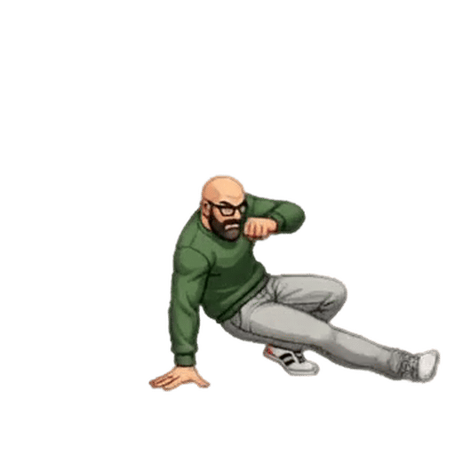
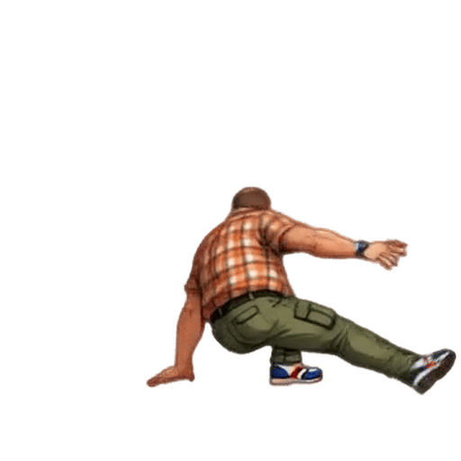
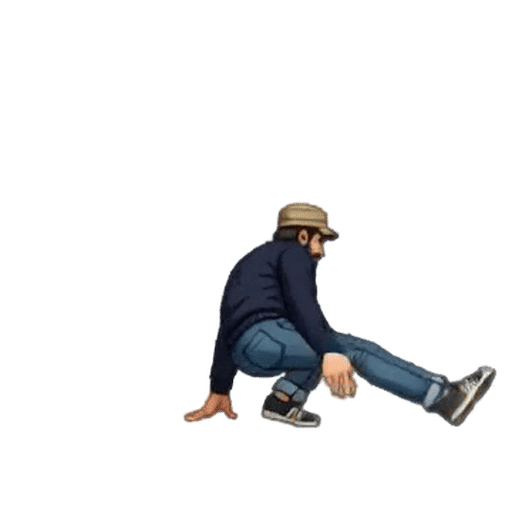
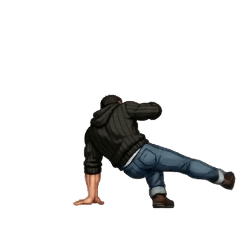
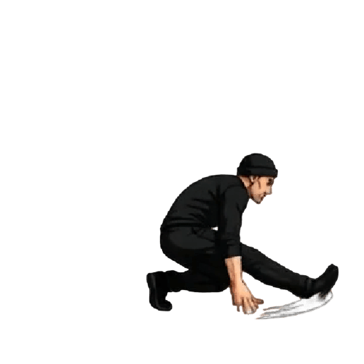
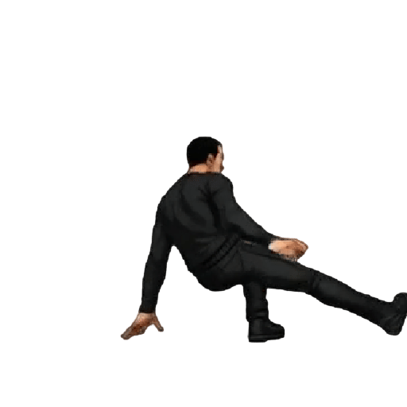
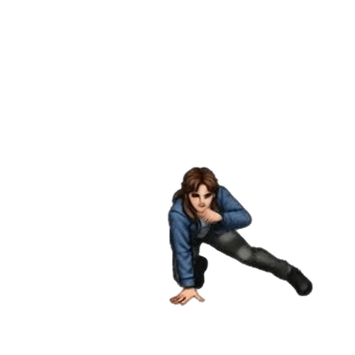
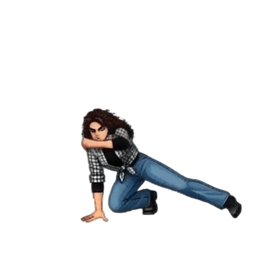
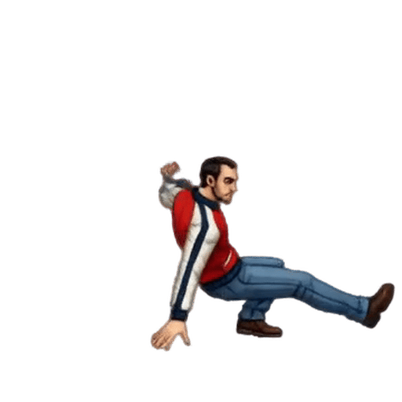

Apri la spazzata nella demoCalcio potente basso (spazzata) · Timing
23 novembre 2026. Integrati i nove personaggi richiesti da Heavy Kick Low Sweep su AutoSprite. La prima passata principale verso l’avversario è marcata a 0,50 s; il ciclo completo termina a 0,90 s a velocità 1×, come il calcio potente.
Tutti i fogli contengono già rotazione e recupero: riproduzione solo avanti, con loop attivo per default. Le ulteriori pose estese durante il giro completo restano nel sorgente. Il marcatore scelto non implica l’aggiunta di altri colpi, danni o hitbox nella demo.
Intervalli salvati applicati una sola volta, senza recuperare i frame esclusi. Celle 512×512, scala e padding originali. La velocità remota salvata (2×) è conservata come metadata e non moltiplica il timing sincronizzato.
271 celle RGBA verificate contro i sorgenti scaricati. Nessuna generazione AutoSprite: 0 crediti. Le durate variabili indicano quando inizia il frame scelto e mantengono l’ordine originale.
Confronto alpha dei nove personaggi · Timing CSV · Manifest · Timing JSON
Il controllo alpha distingue spazi naturali tra arti, bordi sfumati, scie e polvere dai difetti. I contatori automatici servono a selezionare i casi da verificare visivamente; non dimostrano da soli l’assenza di ogni artefatto.
Difetto sorgente individuato: Peppo presenta piccoli riempimenti bianchi tra braccia e corpo nei frame 3, 9 e 15 (da 1). Sono distinti dalle scie e restano da correggere. Ingrandimenti ? Esito del controllo. Non sono emersi ulteriori difetti evidenti di alpha o riempimenti bianchi nei candidati esaminati.
Limite del sorgente di Oscar: nel frame 11 (da 1), il piede del calcio raggiunge e supera il bordo destro della cella 512x512, risultando tagliato. Il file importato conserva scala e padding originali; non e stato ricentrato o ridimensionato. Fotogramma originale.
| Personaggio | Posa d’impatto | Frame da 1 | Intervallo / frame sorgente da 0 | Durata passo prima / dopo | Sorgente |
|---|
| ALBERTO |  | 12 / 30 | 0–29 / 49 | 45.455 / 21.053 ms | cmwthv01401325ky43tlaj03e |
|---|
| FABIO-CLARA |  | 15 / 28 | 0–27 / 49 | 35.714 / 28.571 ms | cmwthv4qj01455ky46lxb1msd |
|---|
| SBOZ |  | 15 / 34 | 0–33 / 49 | 35.714 / 20.000 ms | cmwthwqtk019w5ky4znjahgzr |
|---|
| PIPPO |  | 15 / 28 | 0–27 / 48 | 35.714 / 28.571 ms | cmwti8cpg000syjyoilf0axzc |
|---|
| PEPPO |  | 14 / 32 | 0–31 / 49 | 38.462 / 21.053 ms | cmwthwg2p019s5ky4qv32ga1z |
|---|
| Oscar |  | 11 / 28 | 0–27 / 47 | 50.000 / 22.222 ms | cmwths73m00fwwe2yju737uii |
|---|
| Elisa |  | 10 / 28 | 0–27 / 49 | 55.556 / 21.053 ms | cmwthv2pv013c5ky44z7f58x4 |
|---|
| FRA-TAVARONE |  | 16 / 31 | 0–30 / 49 | 33.333 / 25.000 ms | cmwthv6cf014h5ky45xr2yw0o |
|---|
| MARSAN |  | 14 / 32 | 0–31 / 49 | 38.462 / 21.053 ms | cmwthwz0b00jdwe2yc4ubxu3i |
|---|